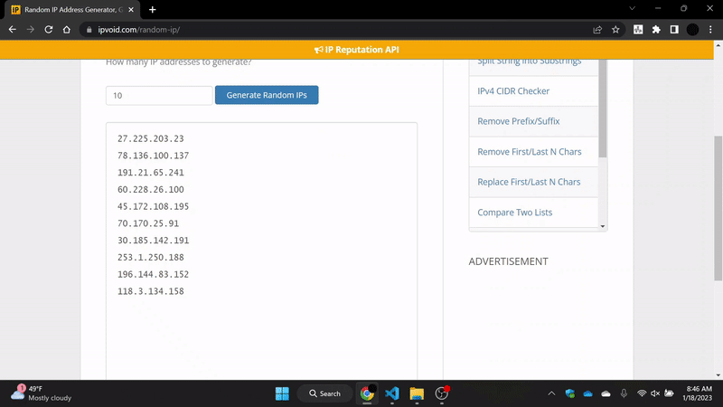

SOC Multi-tool
Introducing SOC Multi-tool, a free and open-source browser extension that makes investigations faster and more efficient.
Now available on Chrome Web Store!
Featured on:

Streamline your investigations
SOC Multi-tool eliminates the need for constant copying and pasting during investigations. Simply highlight the text you want to investigate, right-click, and navigate to the type of data highlighted. The extension will then open new tabs with the results of your investigation.
Modern and feature-rich
• IP Reputation Lookup using VirusTotal & AbuseIPDB- • IP Info Lookup using Tor relay checker & WHOIS
- • Hash Reputation Lookup using VirusTotal
- • Domain Reputation Lookup using VirusTotal & AbuseIPDB
- • Domain Info Lookup using Alienvault
- • Living off the land binaries Lookup using the LOLBas project
- • Decoding of Base64 & HEX using CyberChef
- • File Extension & Filename Lookup using fileinfo.com & File.net
- • MAC Address manufacturer Lookup using maclookup.com
- • Parsing of UserAgent using user-agents.net
- • Microsoft Error code Lookup using Microsoft's DB
- • Event ID Lookup (Windows, Sharepoint, SQL Server, Exchange, and Sysmon) using ultimatewindowssecurity.com